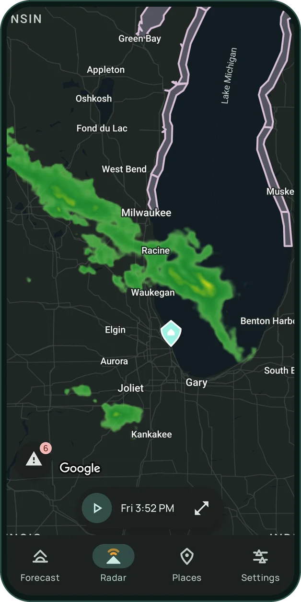
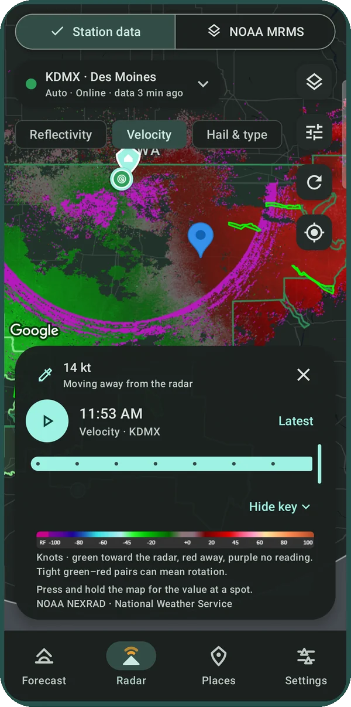
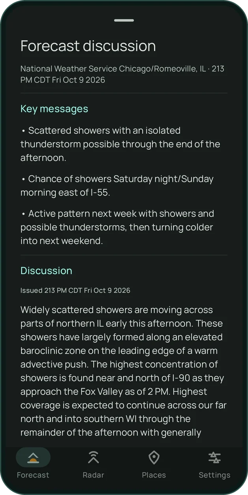
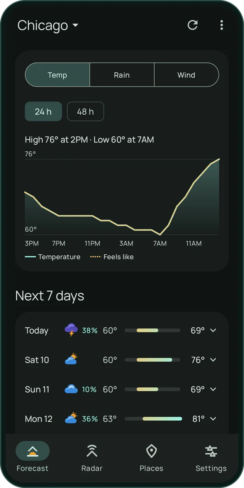
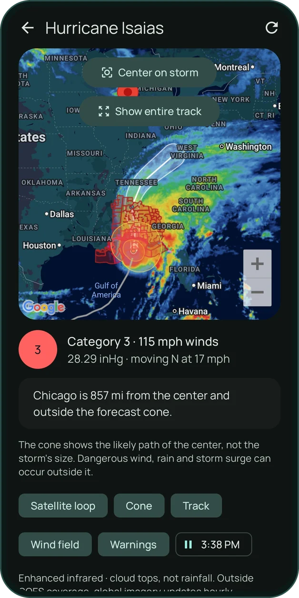

Your station's radar. Not a blurry mosaic.
Gable reads the raw scans from the NOAA radar nearest you, the same data meteorologists use. Or switch to the smooth national MRMS mosaic for the big picture.
Press and hold anywhere for the exact value at that spot.


See what the storm is doing. Not just where it is.
Velocity shows wind toward and away from the radar, so tight rotation stands out. Hail and precipitation type show what's actually falling.
With Gable Spotter
In the words of local forecasters.
In the U.S., forecasts come from your National Weather Service office, with the forecaster's own summary for every day. Everywhere else, MET Norway.
Want the why? Read the office's forecast discussion, key messages first: the reasoning behind the forecast, straight from the people who wrote it.
Forecast discussion with Gable Spotter
Drag through the day. Hour by hour.
Temperature, rain and wind charts you can scrub with a finger, and a Rain soon card that says when rain starts or stops, down to 15 minutes, from NOAA's HRRR model.

Hurricane season, tracked. From the people who forecast it.
The National Hurricane Center's cone, track, wind field and warnings over a live satellite loop, with how far your place is from the center and whether it's inside the cone.
Always free
Everything else in Gable
Severe weather alerts
NWS warnings for your places, with quiet hours that never silence a tornado or flash flood warning.
Future radar
Where the rain is headed over the next hours, from Gable's own HRRR forecast radar.
Rain, minute by minute
When rain starts and stops over the next hours, with a little commentary, and live countdowns with Spotter.
Your places
Save the places you care about and swipe between them. Alerts follow each one.
Home screen widgets
Conditions, the rain-soon chart and the days ahead on your home screen, with Spotter.
A little personality
The sky on the forecast card moves with the weather, and Gable has a few opinions about it.
For people who watch the sky.
Warnings, alerts and station radar stay free. Spotter adds the tools weather nerds ask for, and keeps Gable independent and ad-free.
- Velocity, hail, precipitation type and every station product
- The full 18-hour Future radar and 48-hour charts
- Your choice of forecast source
- Rain, lightning and custom alerts, with live countdowns
- Every NOAA map layer, extra palettes and unlimited places